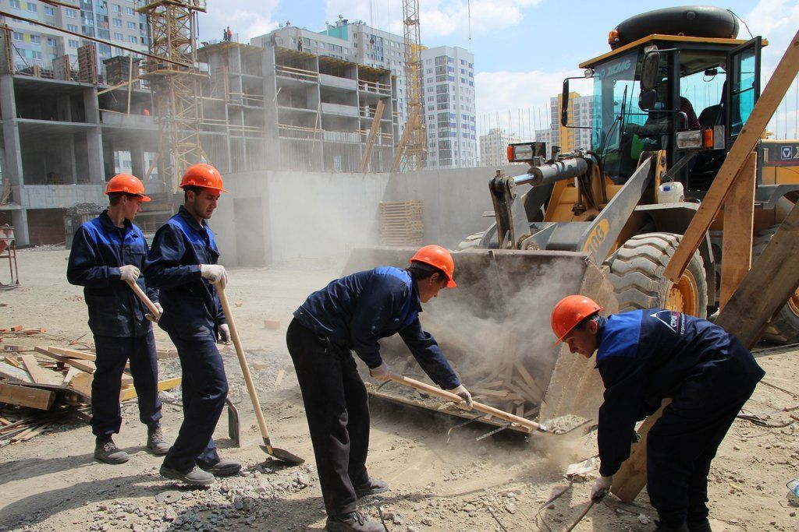

Разнорабочие в Екатеринбурге
Необходимость в дополнительных рабочих может возникнуть в любой момент - уменьшение отведенного времени на строительство, отсутствует возможность найти мастеров и т.д.
Заказать разнорабочихБудет оптимальным вариантом для физического и юридического лица, независимо от типа работ и поставленных задач. Помочь с этим может компания “РазнорабМСК”, предлагающая оперативный выезд сотрудников по указанному адресу. Мы можем предоставить от нескольких до сотни рабочих, которые ответственно выполнят поставленную задачу. Найти разнорабочих и сэкономить на этом теперь просто - достаточно связаться с нами удобным для клиента способом. С нашей стороны предлагается нанять разнорабочих в Екатеринбурге, которые в сроки выполнят возложенные на них задачи. Начните сотрудничать с “РазнорабМСК” и убедитесь в надлежащем качестве оказываемых услуг.
5 причин, чтобы нанять разнорабочих у нас- Предоставим любое количество работников, требуемых для выполнения поставленного задания.
- Отсутствуют ограничения относительно длительности найма. В этом случае, все зависит от имеющегося бюджета.
- Обеспечиваем быструю замену работников - у заказчика всегда в распоряжении ранее нанятое количество разнорабочих.
- Адекватная цена найма, которая ниже стоимости у других подобных компаниях. Это основной повод для сотрудничества с нами.
- В штате только славяне, что является в некоторых случаях основным условием для клиентов.
И решить проблему недостатка работников не составит труда. Для связи с нашим менеджером можно воспользоваться телефоном, электронной почтой или онлайн-чатом. Выгодные предложения по найму разнорабочих Отличительной особенностью компании является наличие скидок и возможности вернуть 10% от изначальной суммы, потраченной на услугу. Данный подход с нашей стороны полезен для крупных строительных компаний и частного строительства. Экономить на сооружении объекта или на выполнении других работ - первостепенная задача для заказчика, решить которую поможет “РазнорабМСК”.
Все разнорабочие в Екатеринбурге от нас являются гражданами страны, что исключает проблемы с соответствующими органами. Каждый из сотрудников обладает необходимыми навыками и знаниями для выполнения поставленных заданий. Это же относится и к технике безопасности, т.е. работники ознакомлены с правилами безопасного труда (зависит от типа проводимых работ). Оформление заказа. Оплата Чтобы заказать услуги разнорабочих на любой промежуток времени, достаточно связаться с нами. В процессе обсуждения заказа, рекомендуем предоставлять достоверную информацию - это позволит избежать проблем в будущем. Клиент также может подобрать удобный способ оплаты - рассчитаться за услугу можно наличными или безналичным переводом. Остались вопросы? Позвоните по указанному номеру и получите подробную консультацию от менеджера. Доверьте выполнение сложных работ нашим сотрудникам и убедитесь в их профессионализме.
04.08.2022